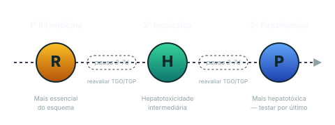

Hepatotoxicidade: suspender tudo, reintroduzir R → I → P
Três drogas hepatotóxicas, uma conduta clara: parar tudo, esperar a normalização, e reintroduzir na ordem correta pra identificar o culpado.
Conceito
As 3 drogas hepatotóxicas do RIPE
Rifampicina + Isoniazida + Pirazinamida são as 3 drogas hepatotóxicas do RIPE.
Etambutol não é hepatotóxico — por isso fica de fora do esquema de reintrodução. Pode continuar (ou ser introduzido) sem testar contra função hepática.
A pirazinamida é a mais hepatotóxica das 3; rifampicina e isoniazida têm hepatotoxicidade intermediária.
Decisão
Critério operacional pra suspender tudo
Critério canônico de hepatotoxicidade que dispara suspensão completa do RIPE:
Elevação de transaminases > 3× LSN com sintomas (anorexia, náusea, vômito, dor abdominal, icterícia); OU
Elevação de transaminases > 5× LSN assintomática.
Conduta imediata: suspender RIPE inteiro + dosagem laboratorial seriada (transaminases, bilirrubinas, INR/TP) + investigação de outras causas concomitantes (hepatite viral, álcool, outros medicamentos hepatotóxicos).
Aguardar normalização das transaminases (geralmente < 2× LSN) antes de iniciar a reintrodução.

Sequência de reintrodução R → I → P após normalização das transaminases.Síntese · sequência temporal
Reintrodução R → I → P
Esquema canônico (Manual MS-TB 2024):
Dia 0: introduzir Rifampicina isolada em dose plena. Monitorar transaminases nos próximos 3-7 dias.
Dia 3-7: se rifampicina tolerada (transaminases estáveis), introduzir Isoniazida. Monitorar 3-7 dias.
Dia 6-14: se R + I toleradas, introduzir Pirazinamida. Monitorar 3-7 dias.
Se algum fármaco causar nova elevação importante de transaminases durante a reintrodução → identificado o culpado → manter os 2 tolerados + substituir o culpado por alternativa (esquema individualizado, geralmente em referência especializada).
Alerta
Lógica da ordem R → I → P
Por que rifampicina entra primeiro: é a droga mais essencial do esquema RIPE. Sua perda exige reformulação significativa. Vale o risco controlado de testá-la primeiro — quando R volta sem problema, o restante do esquema fica mais fácil de reconstruir.
Por que pirazinamida por último: é a mais hepatotóxica das 3. Se houver recidiva da hepatotoxicidade durante a reintrodução, a pirazinamida é a candidata mais provável a ser o culpado. Testando por último, evita-se confundir a culpa entre as drogas.
Isoniazida no meio: hepatotoxicidade intermediária + droga essencial pra manutenção (R + I) — testar antes da pirazinamida garante que o "par de manutenção" está intacto.
Recuperação ativa · 1
Quais as 3 drogas hepatotóxicas do RIPE, e qual fica de fora do esquema de reintrodução?
As 3 drogas hepatotóxicas: Rifampicina + Isoniazida + Pirazinamida.
Fica de fora: Etambutol — não é hepatotóxico, por isso não entra no esquema de reintrodução. Pode continuar ou ser introduzido sem testar contra função hepática.
Gradação de hepatotoxicidade entre as 3: pirazinamida é a mais hepatotóxica; rifampicina e isoniazida têm hepatotoxicidade intermediária comparável entre si.
Recuperação ativa · 2
Por que a ordem de reintrodução é R → I → P e não em outra sequência?
Três razões em sequência:
Rifampicina primeiro: é a droga mais essencial do esquema. Sua perda obriga reformulação significativa. Testá-la primeiro permite confirmar rapidamente se ela é viável.
Isoniazida segundo: hepatotoxicidade intermediária + necessária pro par de manutenção (R + I). Testá-la antes da pirazinamida garante que o esqueleto de manutenção do esquema está reconstruído.
Pirazinamida por último: é a mais hepatotóxica das 3. Se houver recidiva da hepatotoxicidade durante a reintrodução, é a candidata mais provável a ser identificada como culpada. Testando por último, evita-se atribuir culpa errada às outras drogas.
Espaçamento entre as introduções: 3-7 dias por fármaco, com reavaliação de transaminases antes da próxima.